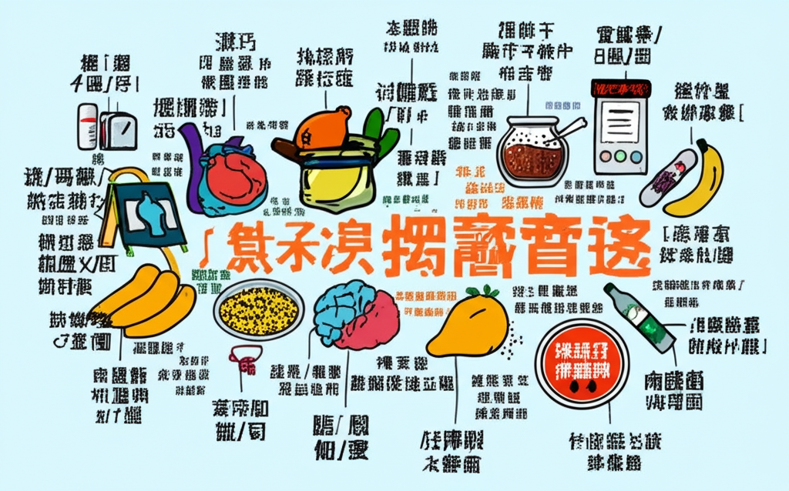

# 近期健康醫療新聞重點摘要
## 引言
近期健康醫療新聞聚焦在高血壓、心血管疾病、腎臟健康等議題，同時也探討了飲食習慣與慢性病之間的關聯。從控制血壓到預防洗腎，再到透過飲食改善健康，相關報導提供了豐富的資訊，提醒大眾關注自身健康，及早預防相關疾病。
## 主體內容
### 第一點：高血壓防治與飲食建議
多篇新聞報導都強調了高血壓的防治與飲食的關聯。
* **健康網》不只減鹽控血壓！「鎂」食護心又能助好眠：** 指出除了減鹽，攝取富含鎂的食物有助於控制血壓。
* **擔心血壓高爆血管？芹菜顧血管、降血壓聰明吃：** 營養師建議可透過攝取芹菜來輔助降血壓。
* **讓血管變年輕！香蕉撒1匙修復血管、強效降血壓！：** 提及肉桂香蕉有助於控制飲食，進而治療高血壓。
* **燕麥代替白飯！台女改習慣一年減44磅一種燕麥有效降三高建議用量...：** 強調燕麥富含膳食纖維、鈣與鎂，有助控制血壓、三高及減脂。
這些報導都表明，飲食在血壓控制中扮演著重要的角色。
### 第二點：心血管疾病的預防與警惕
另一個重點是心血管疾病的預防與警惕。
* **糖尿病男頭暈嘔吐送急診竟是心肌梗塞| beanfun!：** 提醒慢性病患者更要控制好血糖、血壓，預防心血管疾病的發生。
* **年輕就高血壓更危險！醫揭這族群平均52歲就洗腎，恐引爆主動脈剝離：** 強調年輕型高血壓的危害，可能導致腎臟損傷甚至主動脈剝離。
* **健康醫療網- 最關心大眾健康的醫藥網路媒體:**提及了高血壓、心臟病等慢性疾病。
這些新聞提醒我們，心血管疾病的預防需要及早開始，且高血壓是心血管疾病的重要風險因子。
### 第三點：台灣洗腎人口比例偏高問題
關於台灣洗腎人口比例偏高的問題，也有相關討論。
* **台灣的洗腎（透析）人口比例長期位居全球首位：** 分析了台灣洗腎人口比例居高不下的原因，並與日本的飲食習慣和慢性病控制進行了比較，強調均衡飲食和控制糖分攝取的重要性。
這篇報導警示我們，需要更加重視腎臟保健，並從飲食和生活習慣上進行改善，以降低洗腎風險。
## 結論
總體而言，近期健康醫療新聞強調了飲食、生活習慣與慢性病之間的密切關聯。高血壓、心血管疾病、腎臟健康等議題都與我們的日常飲食息息相關。透過均衡飲食、控制血壓、定期檢查等方式，我們可以有效預防和控制相關疾病，維護自身健康。